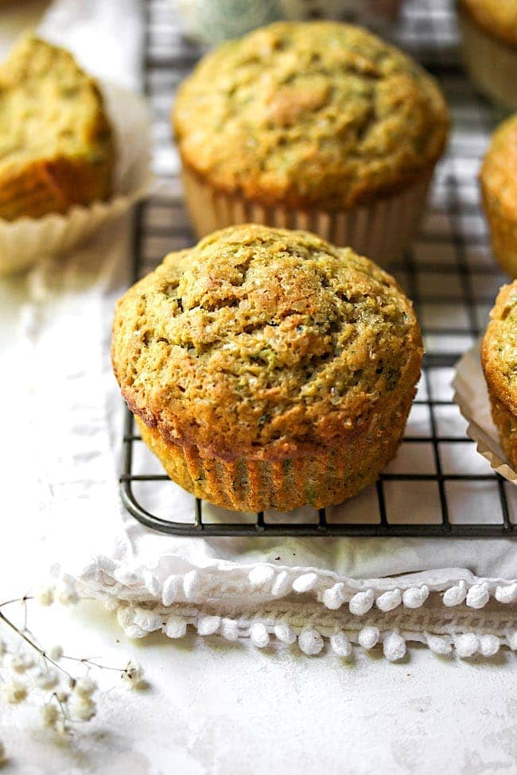

Zucchini Muffins

The OG of the most amazing cookies of the squash persuasion
This is one of the first cookies I ever experienced that was not the all to often used basic chocolate chip cookie or sugar cookies.
I never knew cookies could be this amazing before this one. I personally do not care for things in my cookies so this version does not have
any chocolate chips like a lot of people like to add. Blaphemers.
They are by no means a pretty cookie, often times the remind me of a pile of poo,
but they are delicious and sooooo easy to make that it really doesn't matter. After all they aren't going to last long enough for any pictures anyway.
The one above is a rare exception and was only accomplished with a large guard detail.
Ingredients:
- 1 can of Pumpkin
- 1 1/2 cups of Flour
- 2 Eggs
- 1 cup of Sugar
- 1 teaspoon of Baking Soda
- 1 teaspoon of Salt
Steps:
- Mix everything together into a big bowl until it makes lovely, tasty cookie dough. Feel free to sample.
- Line baking sheet with parchment paper or grease it up a bit so the cookies don't stick.
- Make about golf ball sized dollops of dough and place them on the sheet. They can be bigger if you want or smaller and it doesn't matter if they are lump or smooth.
The main takeaway is that they are all about the same size.
- Pop them in the oven at 350 degrees.
- Back until they look like the picture in color and stiffness.
- Continue making more cookies while you eat and enjoy!